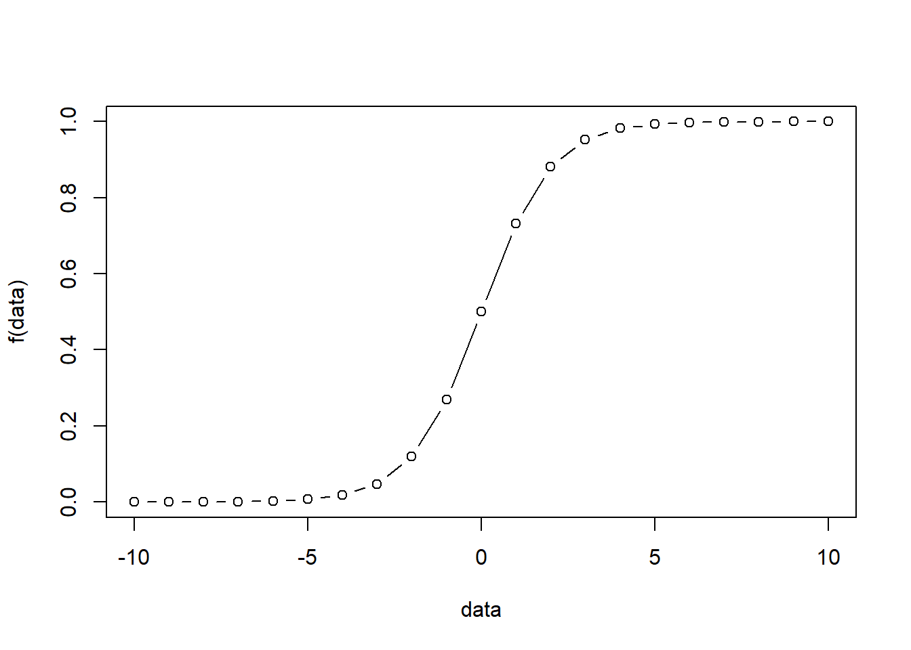

Logit Models
2019-12-26
Chapter 1 Basics
1.1 Logit
\[f(x)=log(\frac{p(y=1)}{1-p(y=1)})\] The basic idea of logistic regression: \[p(y=1)=\frac{1}{1+e^{-(\beta_0+\beta_1x_1+...+\beta_nx_n)}}=\frac{e^{\beta_0+\beta_1x_1+...+\beta_nx_n}}{1+e^{\beta_0+\beta_1x_1+...+\beta_nx_n}}\] Thus, \(e^{\beta_0+\beta_1x_1+...+\beta_nx_n}\) can be from \(-\infty\) to \(+\infty\), and \(p(y=1)\) will be always within the range of \((0,1)\).
f<-function(x){exp(x)/(1+exp(x))}
data<-seq(-10,10,1)
plot(data,f(data),type = "b")
We can also write the function into another format as follows: \[log \frac{p(y=1)}{1-p(y=1)}= \beta_0+\beta_1x_1+...+\beta_nx_n\]
The following is an example testing whether that home teams are more likely to win in NFL games. The results show that the odd of winning is the same for both home and away teams.
mydata = read.csv(url('https://raw.githubusercontent.com/nfl-football-ops/Big-Data-Bowl/master/Data/games.csv'))
mydata$result_new<-ifelse(mydata$HomeScore>mydata$VisitorScore,1,0)
summary(mydata$result_new)## Min. 1st Qu. Median Mean 3rd Qu. Max.
## 0.0000 0.0000 0.0000 0.4945 1.0000 1.0000mylogit1 = glm(result_new~1, family=binomial, data=mydata)
summary(mylogit1)##
## Call:
## glm(formula = result_new ~ 1, family = binomial, data = mydata)
##
## Deviance Residuals:
## Min 1Q Median 3Q Max
## -1.168 -1.168 -1.168 1.187 1.187
##
## Coefficients:
## Estimate Std. Error z value Pr(>|z|)
## (Intercept) -0.02198 0.20967 -0.105 0.917
##
## (Dispersion parameter for binomial family taken to be 1)
##
## Null deviance: 126.14 on 90 degrees of freedom
## Residual deviance: 126.14 on 90 degrees of freedom
## AIC: 128.14
##
## Number of Fisher Scoring iterations: 31.2 Probit
\[\beta_0+\beta_1x_1+...+\beta_nx_n =\Phi^{-1}(p)\] Thus, \[\Phi(\beta_0+\beta_1x_1+...+\beta_nx_n )= p(y=1)\]